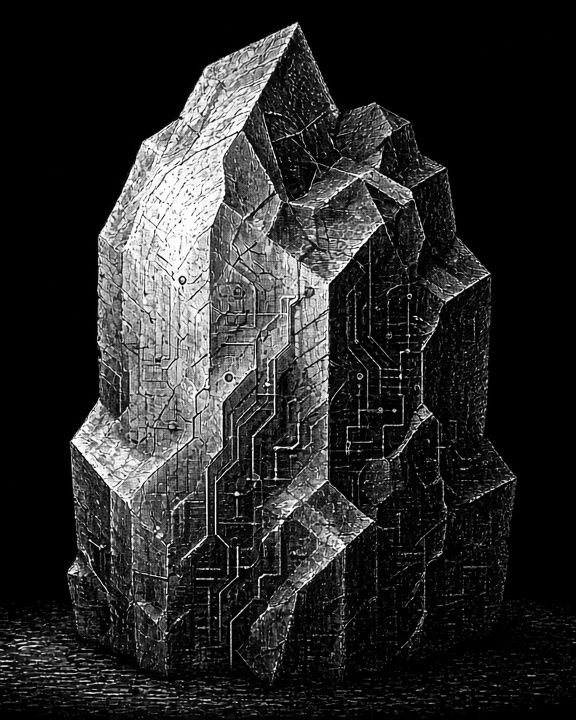

P01 / PROJECT
企业级 AI 助手
- 项目背景
- 企业内部知识分散，员工获取信息成本高，希望借助 AI 助手提升检索与协作效率。
- 我的职责
- 负责需求调研、产品方案设计，并与研发、算法团队对齐上线节奏。
- 解决的问题
- 信息难找、重复咨询多、新员工上手慢。
- 产品成果
- 问答、摘要、资料检索等核心能力。
- 数据或业务影响
- 日均使用率提升 30%，问题解决时长缩短 25%。
- 技术 / AI 能力
- 大语言模型检索增强 RAG权限控制
01 / ABOUT
我是李硕金沅，一名高级 AI 产品经理，从业 1 年，专注于人工智能产品、用户体验与商业化创新。
我习惯从真实的用户任务出发，把模型能力翻译成清晰、可落地的产品方案——关注 AI 产品设计、智能体、生成式 AI、用户需求与技术落地，并在产品、技术与业务之间做好协作与取舍。
我的工作方向主要集中在 AI 产品从“可演示”走向“可使用、可持续”的过程：需求洞察、体验设计、评估指标与商业化路径。

工作理念 / PHILOSOPHY
让复杂的 AI 能力，变成真实、易用且可持续的产品体验。
02 / PROJECTS
P01 / PROJECT
P02 / PROJECT
P03 / PROJECT
P04 / PROJECT
03 / WRITING
关于 AI 产品、智能体与体验设计的思考与笔记（示例文章）。
Demo 证明“可能”，规模化证明“可靠”。从评测、成本到运营，本文整理了跨越这道鸿沟需要补齐的几件事。
Copilot 在“旁边帮你”，Agent 在“替你去做”。交互方式的变化，背后是控制权、可见性与责任边界的重新分配。
理解模型能力是入场券，真正拉开差距的，是对任务、边界与价值的判断。本文梳理 AI 产品经理需要补齐的三层认知。
04 / OPINIONS
四条我在做 AI 产品时反复回到的判断。
AI 产品的核心不是“能不能生成”，而是“能不能帮助用户完成任务”。
好的 AI 体验应该让用户感到可控、可理解、可协作。
产品经理需要同时理解技术边界、用户需求和商业价值。
AI 产品的竞争将从模型能力逐渐转向场景理解和产品体验。
05 / EXPERIENCE
示例内容，请替换
时间线（由近到远）。请将方括号占位内容替换为真实经历。
[YYYY.MM — YYYY.MM]
[YYYY.MM — YYYY.MM]
06 / CONTACT
无论是 AI 产品的合作交流、项目探讨，还是单纯想聊聊智能体与生成式 AI——欢迎留言。
注：表单与邮箱按当前提供的地址发送；邮箱与公众号链接为待确认 / 占位信息。